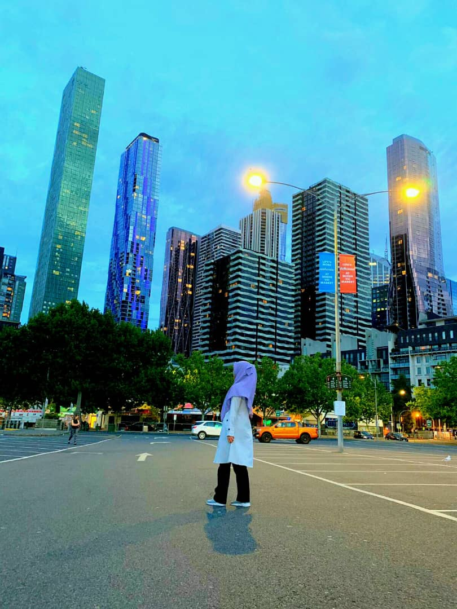
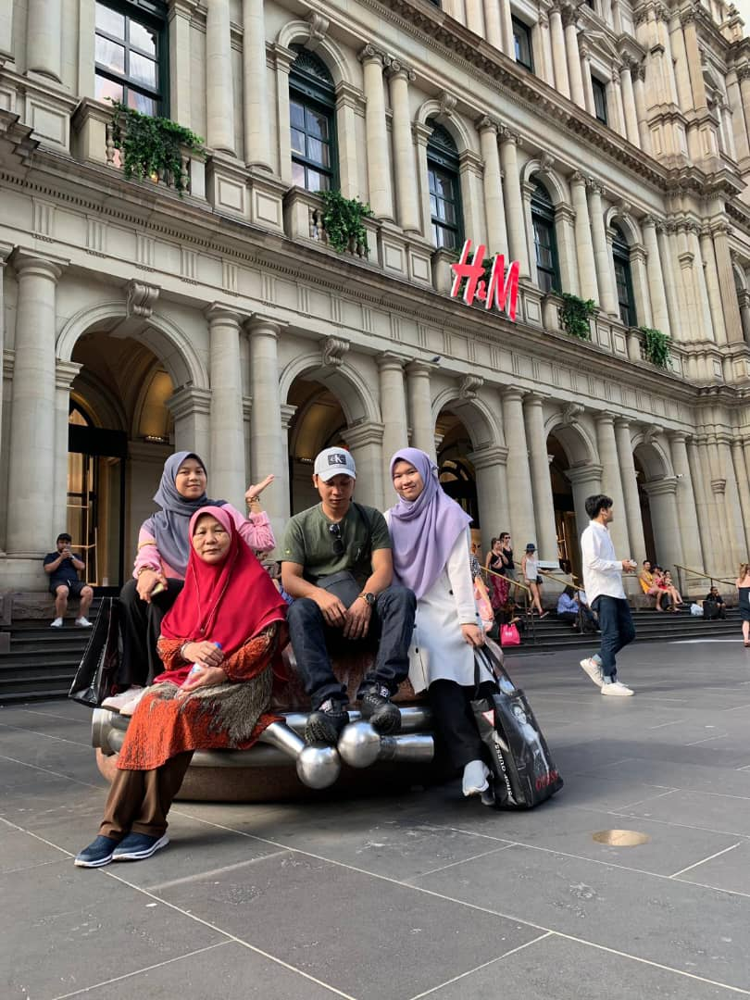
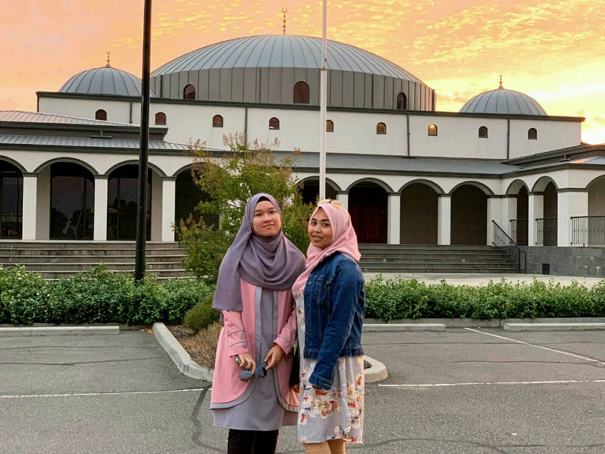

I also good in typing skills since i learn typing technique during my diploma session. I have ability to type the words without see the words on the keyboard. I also can type the word very fast. When i have free time, I will practise my typing skills using Typing.Com website.
Lastly, i also can worked in group. I can lead my teamwork to make sure we can submit all assignment given at the date line given. When my teamwork have a problem to do their task, I will help them. We also help each other and always give own opinion to increase our knowledge.
This is my picture with my family
  